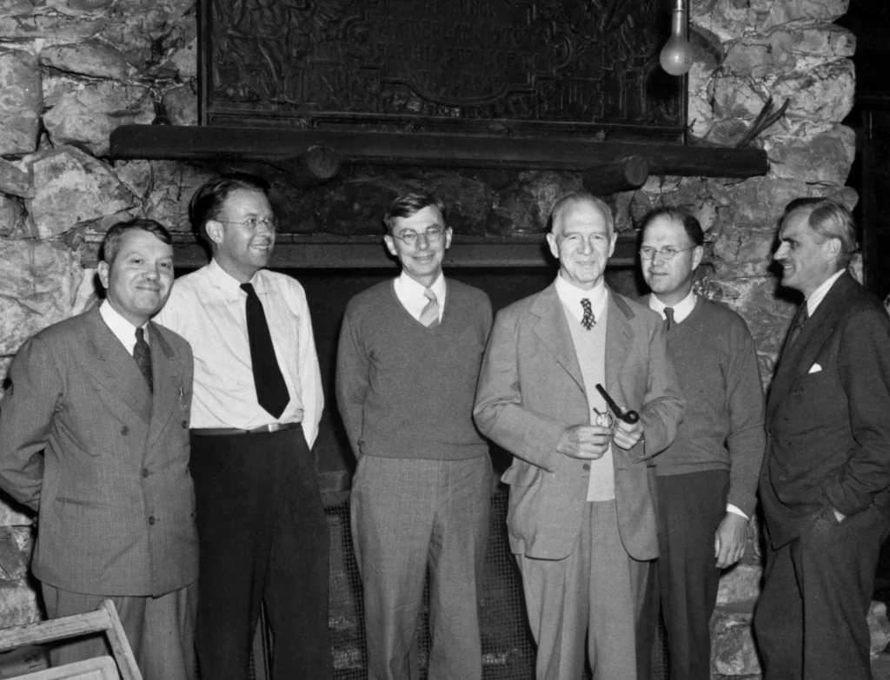
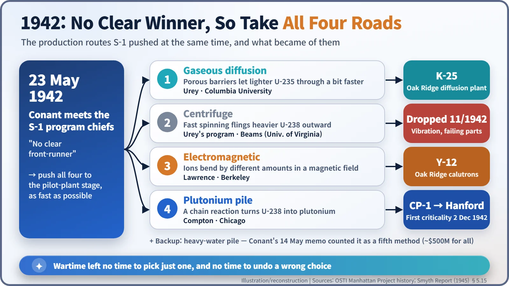
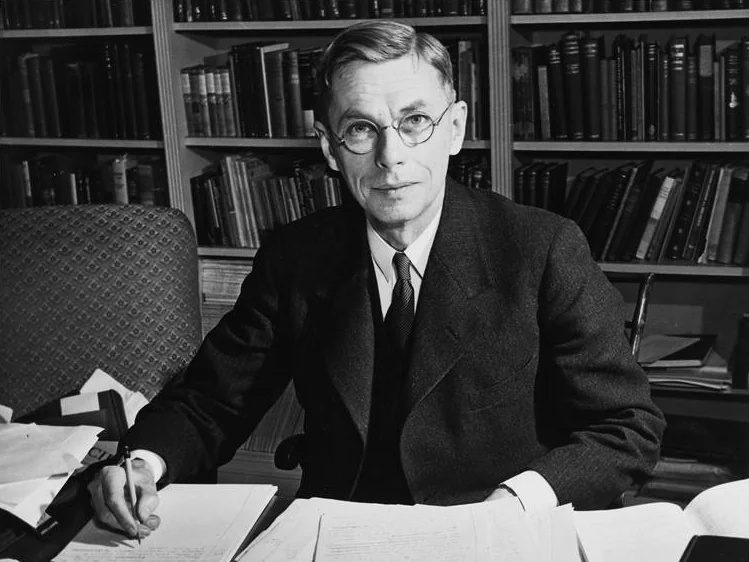
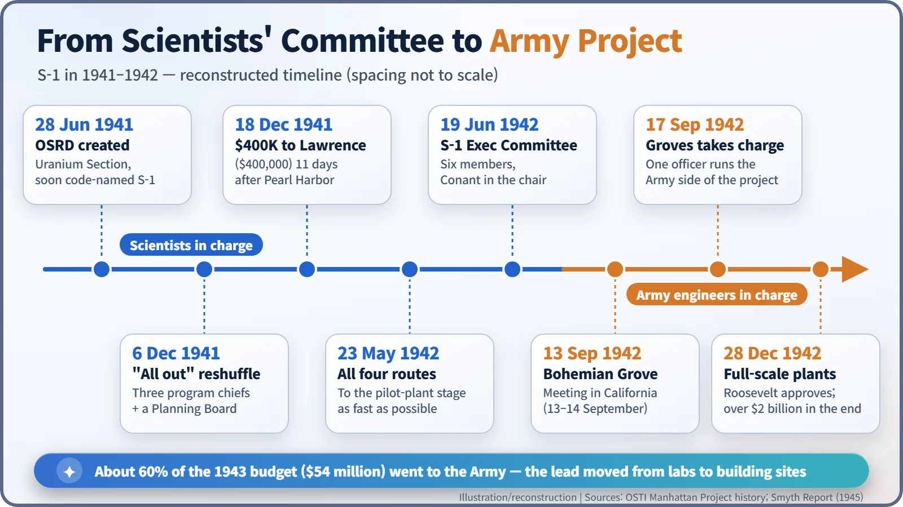

Nuclear History · 085
Six Men by a Fireplace — Code Name S-1, the Committee That Steered the Bomb Research (1941–1942)
With no clear winner among four unproven ways to make bomb material, the S-1 committee chose to take every road at once, then handed the building to the Army.
In 1941 the U.S. uranium effort was renamed with a deliberately dull code, S-1. Over the next year its scientists faced a problem with no obvious answer: which of several unproven methods could make bomb material in time? In May 1942 they chose to pursue all four at once, and by September the leadership of the project had passed from a committee of scientists to the U.S. Army.
Six men by a fireplace
Six middle-aged men stand in a row in front of a huge fireplace of rough-cut stone. One holds a pipe; a couple of them are in sweaters. They look like old college friends on a weekend in the woods. But on 13 September 1942, at Bohemian Grove, a forest retreat in northern California, the subject on their minds was the atomic bomb. [1]
From left to right: chemist Harold C. Urey (1893–1981); Ernest O. Lawrence (1901–1958), inventor of the cyclotron; Harvard president James B. Conant (1893–1978); Lyman J. Briggs (1874–1963), director of the National Bureau of Standards; Eger V. Murphree (1898–1962), a chemical engineer from Standard Oil; and physicist Arthur H. Compton (1892–1962). Together they were the S-1 Executive Committee.

A name with the word "uranium" taken out
When the U.S. government created the Office of Scientific Research and Development (OSRD) on 28 June 1941, the committee that had been looking into uranium became OSRD's Section on Uranium. But writing "uranium" on a document was itself a security leak. So the section came to be known by a deliberately dull label: S-1. No surviving record we could find explains exactly what the letters stand for. That was rather the point — the name told an outsider nothing at all. [5] [6]
"All out," one day before Pearl Harbor
On 6 December 1941, Conant, speaking for OSRD director Vannevar Bush (1890–1974), told an S-1 meeting that the project would now be an "all out" effort and that the group would be reorganized. The very next day (local time in Hawaii; it was already 8 December in Japan) Japan attacked Pearl Harbor. [5]
The new setup split the work three ways. Urey took gaseous diffusion, the centrifuge and heavy water; Lawrence took electromagnetic separation and plutonium; Compton took the chain reaction and the theory of the weapon. Murphree chaired a separate Planning Board responsible for engineering studies and pilot plants. On 18 December, 11 days after Pearl Harbor, S-1 gave Lawrence $400,000 to push ahead with his electromagnetic work. [3]
When you don't know the answer, take every road
There were two broad ways to get bomb material. One was to pull out uranium-235, which makes up only about 0.7% of natural uranium. The other was to build a reactor that turns uranium-238 into plutonium. For the first, three separation methods were on the table:
- Gaseous diffusion — seeping the gas through barriers full of tiny holes, which the lighter atoms pass slightly faster.
- Centrifuge — spinning the gas so the heavier atoms drift outward.
- Electromagnetic separation — sending ions through a magnetic field, where lighter ones bend more sharply.
The trouble was that nobody knew which would work. On 14 May 1942 Conant counted five methods that were "about equally likely to succeed" — the three separation methods plus two kinds of reactor, one using graphite and one using heavy water. Pushing all of them to production, he estimated, would mean a commitment of about $500 million. [5]
On 23 May, Conant and the S-1 program chiefs reached their verdict: push all four routes — gaseous diffusion, centrifuge, electromagnetic separation and the plutonium pile — as fast as possible to the pilot-plant stage. In the words of the Department of Energy's official history, the decision "reflected the inability of the committee to distinguish a clear front-runner." There was also no time to undo a bad choice. It was like a multiple-choice exam where you tick every box — except that each tick came with a factory attached. [2]

A smaller committee, a bigger army
Building factories was not a job for a committee of professors. On 17 June 1942 President Roosevelt approved bringing in the Army, and on 19 June Bush abolished the S-1 Section and replaced it with the six-member S-1 Executive Committee, with Conant in the chair. Decisions were by majority vote; Conant voted only to break a tie. [5] [6]

Process development, procurement, engineering design and site selection moved to the Army Corps of Engineers. About 60% of the proposed 1943 budget — $54 million — was earmarked for those jobs, while S-1 kept roughly $30 million for university research and pilot-plant studies. And it was settled that "an Army officer would be in overall command of the entire project." The Manhattan Engineer District was set up on 13 August, and on 17 September, four days after the Bohemian Grove meeting, Leslie R. Groves was put in charge of the Army's side of the work. A project led by research scientists had become a construction project run by Army engineers, with scientists in support. [1]

Where the four roads led
Not every road went all the way. The centrifuge kept breaking down in trials as vibration wrecked its parts, and in November 1942 it was effectively dropped. Gaseous diffusion led to the K-25 plant at Oak Ridge, Tennessee; electromagnetic separation to the Y-12 plant there; and the plutonium pile, by way of the first self-sustaining chain reaction in Chicago on 2 December 1942, to Hanford in Washington State. On 28 December Roosevelt approved full-scale plants, and the final investment ran to more than $2 billion. [4]
The S-1 Executive Committee kept meeting until September 1943, then faded into an advisory role without ever being formally dissolved. Its central judgement — that it was unsafe to bet everything on a single method — was expensive, but it raised the odds that at least one road would arrive. The pattern it set, with scientists choosing the direction while government and industry built enormous plants, would repeat itself in nuclear development after the war. [5] [6]